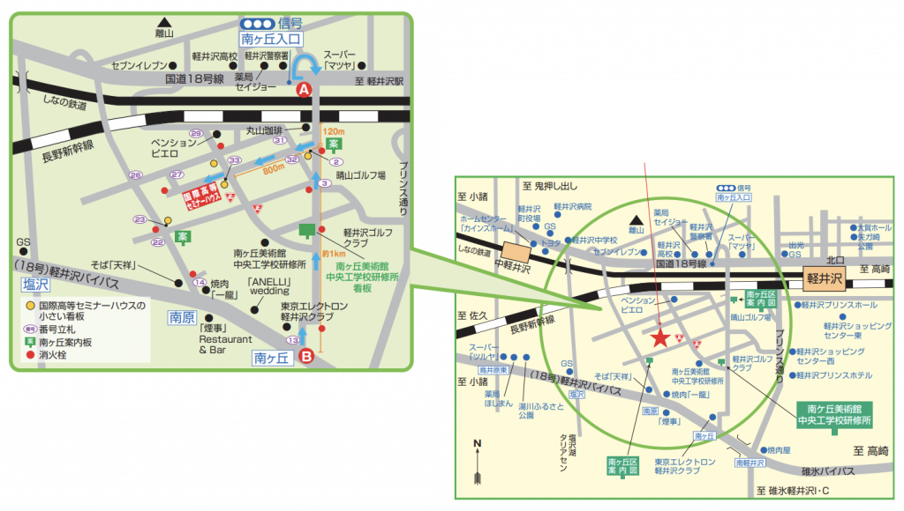
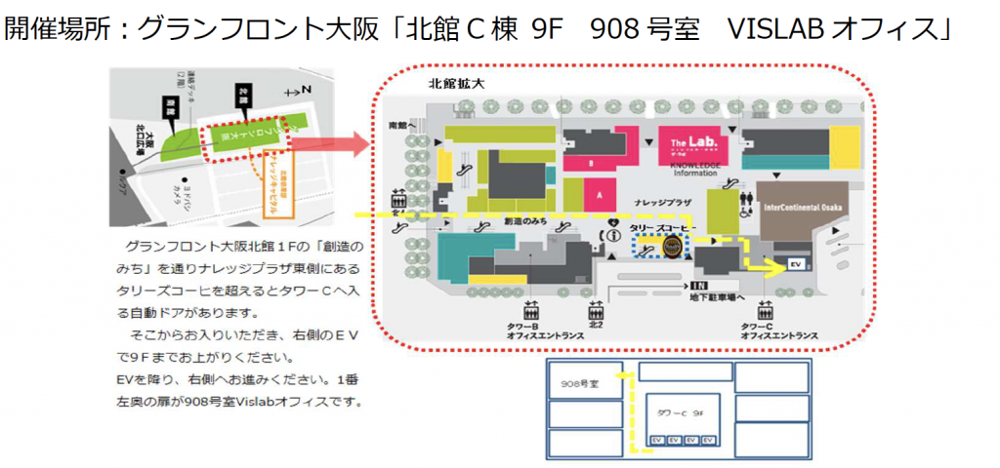

第 50 回インターネット技術第 163 委員会研究会 (ITRC meet50) の開催概要です。


セッションの詳細については こちら をご確認ください（随時更新しています）
| 10:00 〜 10:10(10) | オープニング |
| 10:10 〜 11:40(90) | セッション1 NWGN分科会 |
| 11:40 ～ 13:00(80) | 昼食 / ITRC 運営委員会 |
| 13:00 ～ 14:30(90) | セッション2 MINX-UAT分科会 |
| 14:30 〜 14:40(10) | 休憩 |
| 14:40 〜 15:10(30) | 会員企業セッション |
| 15:10 〜 16:40(90) | セッション3 CIS分科会 |
| 16:40 〜 17:00(20) | 休憩 |
| 17:00 〜 18:00(60) | 一般発表セッション |
| 19:30 ～ 22:00(120) | ハイブリッド交流会・BoF |
| 9:30 ～ 11:00(90) | セッション4 RICC分科会 |
| 11:00 ～ 11:10(10) | 休憩・デモ展示 |
| 11:10 〜 12:40(90) | セッション5 INI分科会 |
| 12:40 ～ 14:00(80) | 昼食・デモ展示 / ITRC臨時総会 |
| 14:00 〜 15:30(90) | セッション6 ITRC ラジオ |
| 15:30 〜 15:40(10) | 休憩・デモ展示 |
| 15:40 〜 16:40(60) | セッション7 PIOT分科会 |
| 16:40 〜 17:00(20) | クロージング |
meet50 attendee をご覧ください。